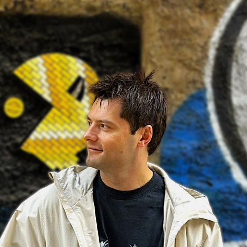

Built by Kyryl Pavlov · Full-Stack EngineerProduction-ready Python 3.10 / Flask boilerplate for scalable SOAP APIs (Spyne, SOAP 1.1). Ships with JWT auth, PostgreSQL + SQLAlchemy, AWS S3 uploads, async SQS + Lambda event processing, Redis caching, Nginx reverse proxy with DDoS protection, Prometheus metrics, Grafana dashboards, Loki log aggregation, Sentry error tracking, Docker Compose infrastructure, and a full pytest test suite — all wired from day one.
# 1. Clone and enter the project git clone https://github.com/Kyryl-Pavlov/python-flask-soap-boilerplate cd python-flask-soap-boilerplate # 2. Create .env.local and set your environment variables # See README → Environment Setup for the full variable list touch .env.local # 3. Start the full stack docker compose up --build
Hover a node to highlight its connections and see how data flows through the stack.
Skip the boilerplate setup and start building features on day one.
Full SOAP service built with Spyne at /soap. WSDL always available at /soap?wsdl — import into SoapUI, Postman, or any SOAP client for schema-validated access.
Access tokens (15 min) and refresh tokens (30 days) out of the box. Auth token passed via SOAP <AuthHeader> element for protected operations.
SQLAlchemy models, Flask-Migrate (Alembic) for schema changes, and an interactive migrate.sh helper. Migrations run automatically on container startup.
Upload files to S3 (real AWS in production, LocalStack locally). Presigned URLs generated on demand — S3 keys stored in the DB, not URLs.
Fanout logger dispatches to Console, Sentry, CloudWatch, and Loki simultaneously. Sensitive data (passwords, tokens) masked automatically before any backend sees it.
Per-endpoint request rate, error rate, and latency histograms at /metrics. Scraped every 15 s — query raw at :9090 or via pre-built Grafana dashboards.
Flask App and Host Metrics dashboards auto-provisioned on startup. No manual setup — open localhost:3000 and they're already there.
Node Exporter exposes CPU, memory, disk I/O, network, and load average from the host OS. Works on Docker Desktop for Windows via WSL2.
Two pre-configured launch profiles: attach to the running Docker container, or run Flask directly on the host with infrastructure auto-started.
Ruff format + lint on every commit. Autofixable violations are fixed and staged automatically — the commit only aborts for issues that need manual attention.
Single entry point on port 80 with built-in DDoS protection: per-IP rate limiting (strict on auth endpoints), connection capping, Slowloris mitigation, and buffer limits. Add new microservices with two config blocks.
Flask publishes events to SQS. A Lambda function (locally: a worker container) consumes them and writes to Postgres. Idempotent via ON CONFLICT DO NOTHING — safe for at-least-once delivery.
Opt-in per endpoint via CacheService. The app degrades gracefully when Redis is unavailable — current_app.cache is None and cache calls are skipped without errors.
Three pre-built workflows: ci.yml runs lint + unit + e2e on every push; deploy-dev.yml and deploy-prod.yml each build images, migrate the database, and roll out to ECS and Lambda. Production deploys require manual approval.
Complete AWS infrastructure as code — VPC, ECS Fargate, RDS, ElastiCache, S3, SQS, Lambda, ALB, WAF, and IAM — split into 11 reusable modules with separate dev and prod configurations.
AWS WAF in front of the ALB with OWASP Top 10, SQLi, bad-input rules, and per-IP rate limiting. App runs in private subnets — never directly reachable from the internet.
Unit and integration tests need no Docker and run in seconds. E2E tests run in CI/CD against the real stack.
Pure functions only — zero external dependencies. Covers sensitive-data masking, AppLogger fanout and level routing, CloudWatch JSON serialization, and CacheService JSON wrap / TTL / ping.
Flask test client with SQLite in-memory database — no Docker required. Tests every SOAP operation (auth, media, events, cache, health) with AWS services mocked at the function boundary.
Real HTTP through Nginx to a fully running stack — Postgres, LocalStack S3/SQS, Redis. Happy paths only, runs in CI/CD via docker-compose.ci.yml. Target URL overridable via E2E_BASE_URL.
pip install -r requirements-test.txt pytest tests/app/unit tests/app/integration # with coverage report pytest tests/app/unit tests/app/integration \ --cov=app --cov-report=term-missing
docker compose -f docker-compose.ci.yml up -d --wait pytest tests/app/e2e/ docker compose -f docker-compose.ci.yml down
GitOps model: merging to develop deploys to dev, merging to main deploys to production (with a manual approval gate).
ruff format --check + ruff check — no Docker neededdocker-compose.ci.yml, runs full HTTP suite through Nginx, tears downdev environment — merge to develop:{git-sha} and :developproduction environment — merge to main:{git-sha} and :mainDuring a rolling ECS update, old and new task instances run simultaneously against the same database. Never drop a column the deployed code still reads. Use a two-phase approach: add the new column first, remove the old one in a later deploy.
The deploy workflow authenticates via OIDC — GitHub exchanges a short-lived token for an IAM role scoped to your repo and branch. Only one GitHub secret is needed: AWS_ROLE_ARN. All other config (cluster name, service name, Lambda function) lives in GitHub environment variables, populated from terraform output.
Every layer secured by default — application code, network traffic, and cloud infrastructure. Nothing to enable; everything is on from day one.
SECRET_KEY is missing — no silent fallback to None that would break session signingHS256 explicit in config — immune to library-default changes and alg: none bypass attemptsapp system user; Lambda image uses nobody — no root access if a container is compromisedX-Frame-Options, X-Content-Type-Options, Referrer-Policy, Permissions-Policy — applied to every response including errors/metrics locked to internal networkserver_tokens off — Nginx version not disclosed in response headers or error pagestransit_encryption_enabled = true on ElastiCache. Client connects via rediss:// (TLS)One terraform apply provisions everything. Secrets are generated and stored in Secrets Manager — never in env files.
GitHub Actions
│ push images (git SHA tag)
▼
ECR Repositories ─────────────────────────────────┐
│ pull on ECS startup pull on invocation │
▼ ▼
Internet ──► WAF ──► ALB (public subnets) Lambda Worker
(OWASP, SQLi, │ │
rate limit) │ forward consumes
▼ │
ECS Fargate (private subnets) SQS Queue ◄── Flask publishes
Flask app on port 5000 (+ DLQ after 3 failures)
/ | \
▼ ▼ ▼
RDS Redis S3
PostgreSQL ElastiCache Media bucket
│ (cache) (presigned URLs)
▲
└────── Lambda also writes events here
Secrets Manager: DATABASE_URL · JWT_SECRET_KEY · SECRET_KEY
(injected into ECS containers at startup — never in env files)
Linux runners at $0.008 / min. LocalStack and the production Docker image are the two main cost drivers.
LocalStack must start S3 and SQS, pass its health check, and run the bucket init script on every run. Everything else in the E2E pipeline can be cached — this phase cannot.
Carefully chosen defaults — swap any layer as your project grows.
docker compose up --build starts everything below — development environment only. No manual service installs required.
| Service | Port | Purpose |
|---|---|---|
| nginx | 80 | Reverse proxy + load balancer — single entry point with DDoS protection |
| app | 5000 · 5678 | Flask API + debugpy (direct access for local dev) |
| worker | — | Lambda handler in polling mode — consumes SQS, writes events to Postgres |
| postgres | 5432 | Primary database |
| redis | 6379 | Cache layer |
| localstack | 4566 | AWS S3 + SQS |
| pgadmin | 5050 | Postgres GUI |
| s3-console | 8080 | S3 bucket browser |
| loki | 3100 | Log aggregation |
| prometheus | 9090 | Metrics database + query UI |
| grafana | 3000 | Dashboards — metrics & logs |
| node-exporter | 9100 | Host OS metrics |
Software Engineer with 5+ years of commercial experience building e-commerce projects. Strong background in server-side technologies (Node.js, TypeScript, Python) and cloud infrastructure (AWS), combined with modern front-end tools like React and Next.js. Proven ability to design scalable APIs, integrate security protocols, and collaborate with cross-functional teams. This boilerplate distils production patterns from real projects into a clean, ready-to-use foundation.